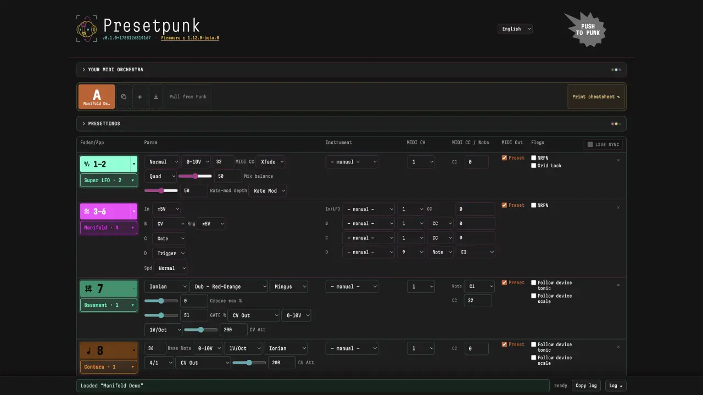
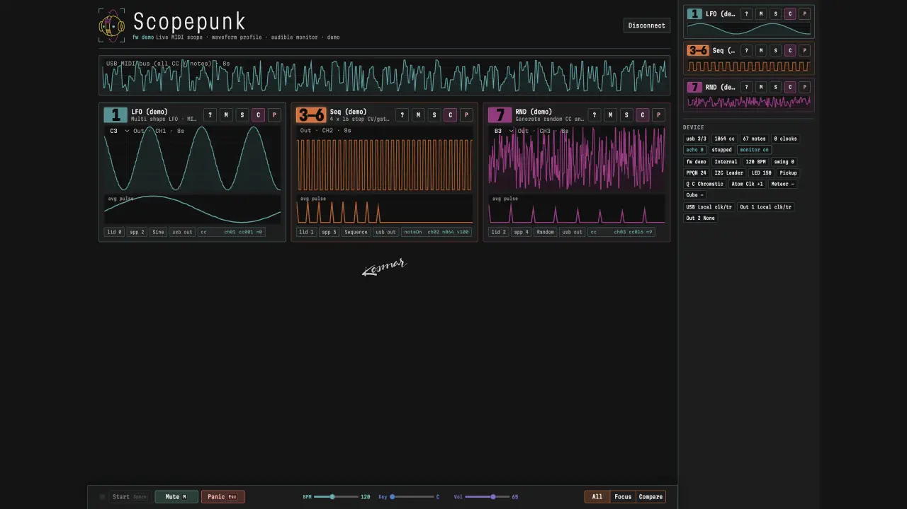

faderpunk-tools
Recall whole Faderpunk layouts between gigs. Or see live what your punkapps send over MIDI.
Both run in the browser — nothing to install. Chromium with SysEx; close other tabs that hold the device ports.
-

Presetpunk Named presets for entire layouts. Pull from the device, push any one back. Open the bank -

Scopepunk Demo without a device Per-app MIDI traces — a wrong channel or stuck CC shows up in the first second. Open the scope
Presetpunk — a layout bank on top of your scenes
Scenes recall everything inside a layout. Presetpunk stores the layouts themselves.
A named preset carries the full slot assignment, every app’s parameters, and the global config, so recalling one can hand you a different instrument. Once it’s loaded, the device’s own scenes take over as usual.
The device stays the source of truth: Pull from Punk captures whatever you just patched; pushing back works whole-preset, per-slot, or live. The editor starts empty — load Manifold Demo with no hardware, or pull from your Faderpunk. Instruments, a MIDI CC catalog, and a printable cheatsheet keep a preset readable months later. English, German, French.
Scopepunk — a debug scope for punkapp developers
See what a Faderpunk app actually emits, instead of guessing from a patch cable.
Developing on hardware is otherwise blind: change a curve, flash, then guess from an LED. Scopepunk draws notes, CC, NRPN and clock as labelled traces per app, so a wrong channel, a stuck value or a drifting clock shows up in the first second.
Views follow the question: All to spot the misbehaving app, Focus to iterate on one, Compare for phase and clock-division bugs. Averaged waveform profiles show a modulation’s real shape; an audible monitor puts CC through a wavetable when your ears are faster than your eyes. USB MIDI carries no CV — apps must mirror with MidiOut → USB. The card above opens demo mode with no hardware.